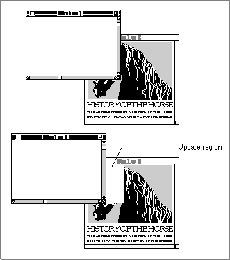

Legacy Document
Important: The information in this document is obsolete and should not be used for new development.
Important: The information in this document is obsolete and should not be used for new development.


Updating the Content Region
The Window Manager helps your application keep the window display current by maintaining an update region, which represents the parts of your content region
that have been affected by changes to the desktop. If a user exposes part of an inactive window by dragging an active window to a new location, for example, the Window Manager adds the newly exposed area of the inactive window to that window's
update region.Figure 4-18 illustrates how the Window Manager adds part of a window's content region to its update region when the user exposes additional content area.
Figure 4-18 Moving one window and adding to another window's update region

The Event Manager periodically scans the update regions of all windows on the desktop. If it finds one whose update region is not empty, it generates an update event for that window. When your application receives an update event, it redraws as much of the content area as necessary, as described in the section "Handling Update Events" beginning on page 4-42.
As the user makes changes to a document, your application must update both the document data and the document display in the content area of its window. You can
use one of two strategies for updating the display:
In either case, your application ultimately draws in the graphics port that represents
- If your application doesn't require continuous scrolling or rapid response, you can add changed areas of the content region to the window's update region. The Event Manager then sends your application an update event, and your application invokes its standard update procedure.
- For continuous scrolling and a faster response time, you can draw directly into the content area of the window.
the window. You draw controls through the Control Manager, and you draw text
and graphics with the routines described in Inside Macintosh: Text and Inside Macintosh: Imaging.